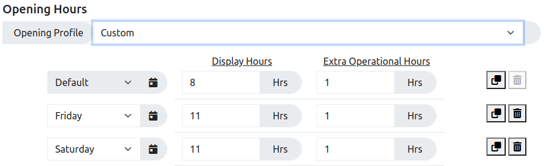
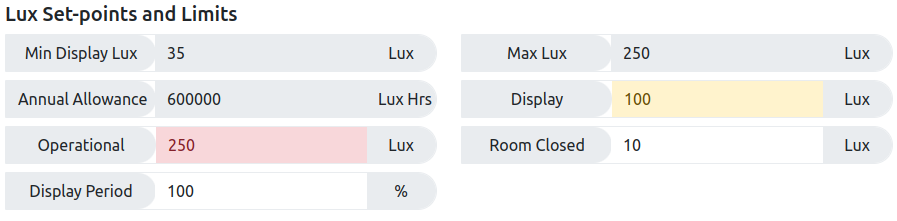

A general introduction to the tool, covering it general purpose is provided on the About page. If you have any questions or suggestions relating to this tool please do post then through the GitHub Issues system here.
Calculation Summary
The purpose of the Lux Allowance Calculator is to establish if a planned period of display can be accommodated based on a maximum permissible annual exposure allowance, or if adjustments will be required to ensure the displayed objects are not over exposed. This is achieved by calculating a possible allocated total of Lux Hrs, based on the selected dates, opening hours, and set points and then comparing it to the appropriate proportion of the select Annual Allowance.
If the Allocated total of Lux Hrs is less than the maximum permissible annual exposure allowance the Calculation Summary section will be coloured green as shown here.
The first line of information will include the length of the selected display period and the maximum appropriate proportion of the select Annual Allowance. If the Display Period value is adjusted, additional information is provided to highlight any changes to the standard maximum allowance, see below.
The next line displays the total allocated Lux Hrs required for the display, as calculated by the tool, along with any remain lux allowance that could be used to accommodate the need for additional activities such as out of hours events.
The next three lines then provides details of how main actual hours of exposure the remaining allowance can accommodate, at 100%, 50% and 40% of the selected normal display levels. This has been included because out of hours events often require lower levels of light.
If the Allocated total of Lux Hrs is greater than the maximum permissible annual exposure allowance the Calculation Summary section will be coloured red as shown here. This indicates that the current lighting plan will result in too much light exposure and either the lighting plan will need to be adjusted or some additional days of dark storage will need to be added to the length of the display period.
The first line of information will include the length of the selected display period and the maximum appropriate proportion of the select Annual Allowance. If the Display Period value is adjusted, additional information is provided to highlight any changes to the standard maximum allowance, see below.
The next line displays the total allocated Lux Hrs required for the display, as calculated by the tool.
The next line highlights CAUTION - OVEREXPOSURE and indicates how many extra Lux Hrs of exposure would be required.
The final line indicates how many extra additional or rest days of dark storage would need to be added to the length of the display period to accommodate the required extra exposure.
Simple Calculations
General calculations can be carried out as follows:
Set the required Start and End dates but clicking on the date fields and selecting the required dates.
Select the appropriate Opening Profile which will define the required opening hours for the display period. (see below for working with Custom values.
Select the appropriate Object Type, this will determine the maximum annual lux allowance and set the various default Lux set points.
The calculated number of Lux Hrs, based on the selection made, are displayed in the Calculation Summary section near the bottom of the page.
Sharing Results
The current dates, selections and settings can always be shared via the automatically updated Shareable Link near the bottom of the page. Each time any adjustments are made to the calculations shown on the page the underlying link is automatically updated. The link itself is slightly longer as all of the details on the page are compressed into the link itself rather than referencing any database.
Custom Opening Hours
The default tool provides two options for opening hours, based on those used at the National Gallery, London, but the tool also provides the option to define custom opening hours. The form provided, see below, allows users to define a default pair of display and operational hours values for a given week. The user can then add in additional rows to indicate if any of the days in the week deviate from this default. Please note that closure days can be indicated with a "0" value for the display hours value, but any exposure required for operational hours and the background level experienced while the room is closed will still count towards the allocated total for each each of the display period.
An example of the form layout used to select custom opening hours.
The default settings for Custom Hours included the default setting along with alternative setting for longer opening times on Friday and Saturday.
The values for the default setting can be edited as required.
The values for the alternative days can also be edited or deleted as required.
The results displayed in the Calculation Summary will be automatically updated as changes are made to the custom opening hours.
Altering Lux Set-points and Limits
The figure below shows all of the various lux set-points and limits that can be changed to adjust the calculations. The default values for all of these fields are set by the Object Type drop down menu.
An example of the form layout used to alter the various lux set-points and limits.
Select the required profile from the Object Type drop-down menu.
Three of the values, Min Display Lux, Max Lux and Annual Allowance are normally marked as read-only, with a grey background. If a user does need to change these values it can be done by selecting the Special Light Sensitivity object type.
The non-read only fields can all be edited as required, but please note the Min Display Lux and Max Lux field values will limit the numbers that can be entered into some of the other fields.
New field values will be taken into account when the user presses the return key or clicks anywhere else on the page.
Once you have edited a field and clicked somewhere else on the page the background colour of the field will change to indicate the change in value. Valid changes will be highlighted in yellow. However, when a change is requested that exceeds the relevant Max or Min values the entered value will be automatically changed to equal the relevant limit and the background will be flagged as red.
The Display Period field is discussed in more detail below.
Display Period
The Display Period field, in the Lux Set-points and Limits section, allows the user to specifically plan for additional or rest days of dark storage on top of the defined display period. This is required for more light sensitive works that may not have a high enough exposure allowance to be displayed all of the time. If additional or rest days of dark storage are added, the total length length of time used to determine the proportion of the annual exposure allowance available for a given display event increases.
For example (simplified for ease of explanation)
If an exhibition was planned to last for 6 months the lighting allowance for the exhibition would be half of the maximum annual allowance. So, for a Medium Light Sensitive object, like pastel drawing, with an annual allowance of 150,000 Lux Hrs, the exhibition allowance would be half of that at 75,000 Lux Hrs.
Now if, due to longer opening hours and the need for higher display lux levels, the six month exhibition actually needed the full 150,000 Lux Hrs a Medium Light Sensitive object would end up being over exposed.
If, as part of the exhibition plan, the Medium Light Sensitive object is actually put into dark storage for six months, before or after the exhibition, the exhibition allowance can be doubled as over the 12 month period of the exhibition and the dark storage the Medium Light Sensitive object would not exceed its maximum annual allowance.
In this case the exhibition period can be seen as being half, or 50%, of the total period of time being considered when calculating maximum exhibition allowance.
For this example the Display Period value in the Lux Set-points and Limits section can be set to 50 and the required number of days, in this case about 180, will be indicated in the Calculation Summary.
This is a complex process to explain and calculate, potential improvements are being considered but thoughts and suggestions are welcome and can be posted through the GitHub Issues system here.
Adding New Default Settings
For infrequent use the options for Custom opening hours and fully editable limits and set-points with Special Light Sensitivity objects can allow a wide range of users to exploit this tool. However, it has been suggested that, if users need to use the tool frequently then having to repeatedly make a wide range of similar adjustments to the provided default, every time the tool was used, would be less than ideal. Therefore, two options have been considered to allow users to add additional or new default settings.
The default setting are all stored in one configuration file called lightallowance.json which can be found in the build folder.
This file is structured in a format called JSON, which although a little tricky, is relatively human readable and the default setting could be edited as required if a users creates their own copy of the code.
New or additional default values can be added to the tool by either referencing an extra configuration file or by creating a new version of the system and editing the new lightallowance.json file.
Option 1: Reference an additional settings configuration file
Additional information can be passed to web pages by adding information to the end of the page's URL.
To reference an additional web based configuration file it's own URL needs to be added to the end of the default URL by adding ?url=https://link/address/to/the/new/file
An example additional configuration file has been included in the tool to demonstrate the process.
This new URL can then just be book marked and used in the future and the additional configuration options will be added to the drop down menus every time.
If a user does not already have access to facilities to host their own additional web based configuration file, they could host it free on GitHub. Instructions for creating a repository on GitHub to host a file are relatively easy to find on Google.
Option 2: Copy the software and edit the settings
The process of copying this software, which is hosted on GitHub, is called Forking.
The Lux Allowance Calculator is based on a tool called Simple Site and the generic instructions for forking a Simple Site based system can be found here.